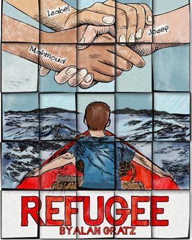

My favorite books of all time!
Berlin Boxing Club by Robert Sharenow
Purchasing link for Berlin Boxing Club at Amazon.com
This book brings you into the midst of the Third German Reich during the Nazi realm, and depicts the harsh reality of life that a young Jewish boxer would have to face at this discriminative time, with the need to hide the real
identity of himself.
This book deserves a five star rating as a result of the amazing depiction of an individual that is Jewish in the midst of the Third German Reich.
This story however brings you into the eyes of a boxer that is Jewish, and one that hides their identity from being Jewish, in the face of sports.

Refugee by Alan Gratz
Purchasing link for Refugee at Amazon.com
If I could give this amazing piece of literature a better rating than five stars, I would.
This book is an amazing book that brings you in the eyes of three individuals escaping from the emblem of discrimination, violence, and political repression.
These three individuals bring you in the eyes of three different
crisis, from different time periods and different regimes.
The individual all strive to meet a common goal, which is to meet liberty at it’s eyes, and eventually two of these individuals coming together.

Prisoner B-3087
Amazon purchase link for Prisoner B-3087
The story of a young boy in German occupied Poland, and one that depicts the horrors, terrors, and ultimate destruction that would be seen throughout.
The treacherous concentration camps, and one where you will be rooting for justice to be seen after these horrendous conditions.
This book contains major realism, and one that will make you really want the character to awake
from these conditions.
This book deserves five stars.

Two Degrees by Alan Gratz
Amazon purchase link for Two Degrees
The impending issue of Climate Change is what fuels the issue of this book, mixed in with major incidents with Bears, Hurricanes, and Wildfires all major issues presented all throughout the global sphere.
This book depicts realistically the implications that Climate Change can cause in multiple different areas, transcending this issue into one that strides the globe no matter where you are.
The book itself transcends the
identity of a five star book, with the adrenaline it makes us all pump, for these individuals to get out of their detrimental situation and how they will get out.